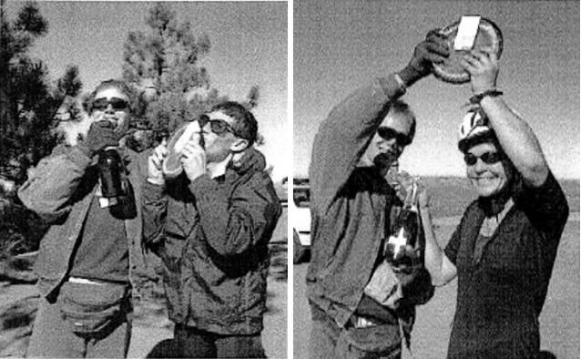

|
1998 Low-Key Hillclimbs Overall Results |
|  |
| series overall Eric Albrecht and Cornelia Fletcher receive their trophies! |
Thanks to our great volunteers for making this series succeed!
pl # rider team category week1 week2 week3 week5 week7 overall 1 606 Allen Hopkins Recumbent 100.00 - - - - 100.00 1 715 Don Kinell Recumbent - - - - 100.00 100.00
pl # rider team category week1 week2 week3 week5 week7 overall 1 593 Tom Lawrence/Sarah Beaver Bikeaholics Mixed Tandem 94.10 100.00 93.53 91.50 93.42 472.56 2 625 John Serafin/Lisa Antonino Bikeaholics Mixed Tandem 100.00 - 100.00 100.00 100.00 400.00 3 301 Mike Jensen/Liz Borra Bikeaholics Mixed Tandem 98.76 - 97.62 91.50 - 287.89 4 85 Dick and Roxanne Robinson TNT Mixed Tandem 69.29 - 85.30 - - 154.59 5 713 Mike Towbridge/Janine Rood LGBRC Mixed Tandem - - - - 79.93 79.93
pl # rider team category week1 week2 week3 week5 week7 overall 1 578 Joe Lansing TNT Trike 100.00 100.00 100.00 100.00 100.00 500.00 2 688 Joseph Venimiglia Purphekt Trike - - - - 54.53 54.53
pl # rider team category week1 week2 week3 week5 week7 overall 1 453 Eric Albrecht JAH LOVE/Menlo Velo 4 91.98 96.00 100.00 88.90 100.00 476.89 2 608 Curt Ferguson TNT 91.29 94.57 97.10 88.26 95.68 466.90 3 525 Bryan Buck Buck Racing Mountain Bike 85.50 85.48 89.51 86.79 91.86 439.13 4 212 Scott Martin Team Bike Trip 40+ 85.76 84.47 91.48 84.08 93.02 438.81 5 502 Robert Murillo 82.72 85.07 91.57 85.01 89.25 433.62 6 357 David George 82.43 85.56 90.10 80.64 94.10 432.83 7 276 Tom Gardin HLBC 85.58 82.31 89.05 82.28 88.26 427.49 8 164 Ron LeBard Alto Velo/MDR 50+ 81.18 84.15 85.96 81.45 89.25 422.00 9 281 Bill Peete Team Bike Trip 45+ 83.83 84.87 87.02 75.15 79.59 410.46 10 337 Greg Dougald Alto Velo/MDR 35+ 80.55 82.74 83.34 74.01 89.23 409.87 11 385 Ted Rees 50+ 78.44 83.20 85.24 71.33 83.42 401.62 12 306 Dean Larson Team Dino 35+ 75.94 80.74 82.55 73.82 82.66 395.72 13 581 Steven Smith Klysdale 73.95 81.00 75.77 63.84 78.36 372.92 14 465 Tim Clark Team Newborn 3 - 93.04 97.01 90.22 88.94 369.20 15 221 Bill Moore Team Pasture 40+ 72.39 77.91 74.71 66.94 74.97 366.92 16 643 Troy Soares TRH Racing 5 - 88.46 92.19 86.99 94.43 362.06 17 70 Todd Studenicka San Jose Bike Club 4 87.06 91.09 --V-- --V-- 91.31 359.27 18 239 Daryl Spano San Jose Bike Club 5 86.90 85.07 85.43 - 91.18 348.58 19 43 Bill Bushnell TNT - 86.82 88.11 81.09 89.87 345.88 20 46 Richard Herms Team Adventure 35+ 81.20 - 89.63 83.08 89.22 343.12 21 597 Stephen Fong 62.82 72.78 66.33 65.18 71.66 338.77 22 575 Bryn Dole Team Internet Former Cat 5 65.01 71.23 67.74 57.06 70.17 331.21 23 79 Randy Nelson Team Pasture 40+ 66.20 74.93 64.98 55.95 --V-- 327.57 24 648 Hal Stanley - 84.67 81.77 76.54 80.25 323.22 25 261 Wayne Westgate Team Pasture 59.60 71.84 62.78 59.58 65.04 318.84 26 628 Leo Menestrina Alto Velo/MDR 5 57.68 70.14 57.70 52.98 60.80 299.29 27 64 Stephen Morris Team Adventure Open 55.60 64.99 58.82 55.69 63.08 298.17 28 340 Frank McGorman Team Mimosa 69.78 82.70 77.56 67.88 - 297.92 29 98 Tracy Colwell Team Colwell Men 89.94 --V-- --V-- 100.00 --V-- 284.90 30 664 Jeremy Smith San Jose Bike Club 3 - - 91.52 83.99 99.11 274.62 31 481 Frank Smoot Turbo Snails - 74.08 69.29 57.45 73.21 274.03 32 627 Paolo Piacentini 60.96 - 70.75 63.95 76.49 272.14 33 470 Allen Price - 70.84 68.42 60.40 71.23 270.89 34 139 Mike Podgorski TNT 35+ 89.56 97.42 - 83.60 - 270.58 35 633 Andrew Verhalen - 83.47 91.48 - 93.44 268.39 36 615 Jeff Emery 5 86.83 - 91.92 88.36 - 267.11 37 635 Christoph Schuba Team Internet - 71.26 65.96 56.98 69.04 263.24 38 356 Sebastian Maurer Pere Et Fils NC 64.30 - 68.59 63.67 63.96 260.52 39 127 Chris Preas TNT Public 86.49 88.55 - 83.51 - 258.54 40 344 Michael Carrasco Team Miguel 50.71 72.01 - 62.58 72.95 258.25 41 618 Albert Li Republic of Anaerobia 5 66.28 - 66.59 55.23 67.69 255.78 42 590 Don Anderson Alto Velo/MDR Climbing Impaired 79.64 89.17 - - 85.07 253.88 43 669 Bob Parker Republic of Anaerobia - - 84.22 78.39 85.53 248.14 44 214 Paul Mircik TNT TB 81.89 89.48 75.92 - - 247.29 45 624 Phil Brotherton San Jose Bike Club 79.60 - - 76.22 88.75 244.56 46 607 Scott Frake 78.95 81.37 - - 83.16 243.48 47 571 Mark King Fremont Freewheelers 5 76.24 80.82 82.83 - - 239.89 48 644 Dean Hoornaert - 78.02 83.82 - 77.77 239.60 49 83 Giorgio Cosentino TNT Public 74.91 - 82.87 78.14 - 235.91 50 316 Jack Utstad New Vision NORBA Sport 40+ 76.61 80.34 78.48 - - 235.43 51 355 Joseph Maurer Pere Et Fils HC 55.26 - 60.76 54.26 65.01 235.30 52 35 MikesBuchanan SCCC 80.69 83.67 70.00 - - 234.36 53 630 Nigel White Bikeaholics - 67.48 - 77.68 88.85 234.00 54 652 David Hung JAH LOVE/Menlo Velo - 76.31 73.02 - 75.59 224.92 55 93 Bob McDermand San Jose Bike Club - - --V-- 71.05 74.88 218.90 56 266 Bill Grasberger 65.53 - 71.31 67.50 - 204.34 57 31 David Wyandt Palo Alto Bikes/Specialized 2 100.00 100.00 - - - 200.00 58 447 Nick Leavy 67.85 73.53 - 57.86 - 199.24 59 319 Tim Irvine SJSU Low 69.37 - 66.61 62.60 - 198.58 60 574 Michael Dunn Palo Alto/BICI Bike 95.37 97.37 - - - 192.74 61 641 Clint Gaver - 95.85 94.98 - - 190.83 62 637 John St. Denis - 88.02 95.36 - - 183.38 63 299 Chris Oliver Team Mimosa - - 94.42 84.77 - 179.18 64 199 Chris Oliver Team Mimosa 88.36 88.99 - - - 177.35 65 601 Blair Clark Alto Velo/MDR Masters 87.17 89.44 - - - 176.60 66 622 John 'Kelly' Johnson Alto Velo/MDR 35+ 85.72 90.48 - - - 176.21 67 658 Daniel Law - - 83.34 - 79.73 163.07 68 238 Sam Beal 45+ 76.69 - 84.59 - - 161.29 69 666 James Haugner Alto Velo/MDR - - 79.39 - 80.82 160.21 70 209 David Snyder Pedersen Vintage Concept - - - 75.00 84.69 159.69 71 513 Michael Joe Bikaholics - - - 74.81 83.91 158.72 72 149 Ken Straub Bikaholics 1 80.38 - - 76.26 - 156.64 73 275 Colin Wright - - 78.19 - 76.97 155.16 74 585 Tim Maltoni 57.78 42.37 - - 54.22 154.38 75 665 Zach Walker LGBRC 3 - - 84.86 69.00 - 153.86 76 124 Bob Foulhaber - - 76.65 - 72.22 148.88 77 517 Dan Siehl TNT Old Guys 72.55 - - - 76.30 148.85 78 651 Felix Wong JAH LOVE/Menlo Velo Beyond Category - 78.92 - - 67.04 145.96 79 677 Mark Slavonia 4 - - - 69.26 72.71 141.97 80 605 Owen Grady 54.33 75.24 - - - 129.57 81 443 Bill Ekstrom Dad Daughter Dynamic Duo - - 64.45 57.58 - 122.03 82 675 Jim Lang - - 72.88 46.34 - 119.23 83 286 Gordon Hunter Team Adventure -5 52.82 65.08 - - - 117.90 84 632 Harvey Koozer Turbo Snails Couch Potato - 44.35 36.06 - 36.02 116.43 85 247 Fred Butts TNT 50+ - - 57.27 53.52 - 110.79 86 620 Chuck Blancarte 60.47 - - 49.86 - 110.33 87 681 Mark Banke Too Tall and Too Slow - - - 51.87 58.44 110.30 88 264 Juanes Ray 1st Air Del Co. 5 53.02 - 56.40 - - 109.42 89 636 Derek Eukel - 42.37 - - 65.65 108.02 90 662 Don Low Team Miguel - - 51.34 48.17 - 99.51 91 645 Don Taylor - 42.37 - - 56.14 98.51 92 700 John Geary HEAT.NET 1 - - - - 95.30 95.30 93 639 John Novitsky Monta Vista Velo Men - 91.65 - - - 91.65 94 36 Craig Lindberg SCCC 89.14 - - - - 89.14 95 660 Eric Balfus X-Men - - 89.09 - - 89.09 96 602 Brian Sidwell Giro Sport 4 87.71 - - - - 87.71 97 653 Ken Eichstaedt DFL - 87.59 - - - 87.59 98 240 Eric Nitschke SJSU Punk - - - 87.31 - 87.31 99 671 Jim Mollerus Alto Velo/MDR - - 86.78 - - 86.78 100 702 Martin Mollat - - - - 86.41 86.41 101 600 Jeff Lanterman Alto Velo/MDR 4 85.97 - - - - 85.97 102 631 Mark Robinson Team Mimosa - 85.89 - - - 85.89 103 649 Warren McKean - 84.79 - - - 84.79 104 619 Bart Hackworth 3 84.73 - - - - 84.73 105 499 Jody Hoose 84.56 - - - - 84.56 106 689 Steven Wu 4 - - - - 83.22 83.22 107 638 Stuart Calhoon Alto Velo/MDR - 83.08 - - - 83.08 108 703 Kenneth Holloway Bikeaholics - - - - 82.95 82.95 109 654 Andy Pegg Mint Sauce Race /Howess 40+ - 82.93 - - - 82.93 110 193 Michael Wilder 4 - - - - 82.47 82.47 111 191 Barry Johnson - - 82.44 - - 82.44 112 280 William C. Nowlin Monta Vista Velo 5 82.20 - - - - 82.20 113 683 Jackson Stewart LGBRC 2 - - - 82.00 - 82.00 114 168 Glenn Chadwick Alto Velo/MDR 4 81.17 - - - - 81.17 115 684 Roy Skinner LGBRC 4 - - - 80.91 - 80.91 116 537 John Viksne -4 80.34 - - - - 80.34 117 629 Jeff Crofton - 79.34 - - - 79.34 118 701 Chris Allard Homegrown Doo Be Doo Wah - - - - 78.78 78.78 119 405 Volker Forstmeyer 40+ 78.77 - - - - 78.77 120 6 Gordon Good Alto Velo/MDR 3 78.73 - - - - 78.73 121 623 Michael Ma San Jose Bike Club 4 78.13 - - - - 78.13 122 613 Greg Hall Monticello Velo 4 78.00 - - - - 78.00 123 12 Ed Miller 55+ - - - - 77.72 77.72 124 572 Robert Naylor ICCC 5 77.69 - - - - 77.69 125 710 Eric Bean 20-24 - - - - 77.54 77.54 126 213 Tom Zaharis TNT 35+ 77.28 - - - - 77.28 127 706 Guy Neenan ACTC - - - - 76.37 76.37 128 222 Al Williams Alto Velo/MDR 3 75.53 - - - - 75.53 129 583 Scott Pahl Valley Spokesmen 74.47 - - - - 74.47 130 573 Phil Hobson 74.21 - - - - 74.21 131 358 Daniel Law - - - 73.79 - 73.79 132 77 Mac Imacseng - - - - 73.37 73.37 133 576 Dean Hoornaert 73.18 - - - - 73.18 134 697 Graham Smith 30+ - - - - 72.97 72.97 135 640 Pierre Pothmann - 72.57 - - - 72.57 136 718 Grant Stewart Team Miguel - - - - 72.51 72.51 137 322 Tom Romano Has Beens that Never Were 35+ - - - - 71.66 71.66 138 617 Scott Ployer Forza Public 71.32 - - - - 71.32 139 690 Curt Simon Marin Cyclists 45+ - - - - 69.22 69.22 140 716 Greg Gretz 30+ - - - - 69.21 69.21 141 642 Dick Kirkpatrick - 68.70 - - - 68.70 142 698 Dick Fulton Team Pasture 50+ - - - - 67.79 67.79 143 469 Craig Robertson - - - 67.22 - 67.22 144 579 John Larsen 5 66.66 - - - - 66.66 145 591 Jim Lau 66.65 - - - - 66.65 146 91 Robert Schott Republic of Anaerobia 40+ - - - 66.27 - 66.27 147 495 Bill Keaton - - 65.94 - - 65.94 148 584 Dave Andersen San Jose Bike Club 64.38 - - - - 64.38 149 682 Ron Brunner Commuter - - - 63.45 - 63.45 150 714 Patrick Hoggard Team Despacio 25-29 - - - - 63.12 63.12 151 610 Charles Wong 62.88 - - - - 62.88 152 582 Francois Lafontaine ACTC 62.48 - - - - 62.48 153 599 Tom Baker 62.35 - - - - 62.35 154 61 Steve Blair Alto Velo/MDR 61.92 - - - - 61.92 155 598 James Craig Baker Alto Velo/MDR 4 61.78 - - - - 61.78 156 479 Conor Schott ROA 10-14 - 60.09 - - - 60.09 157 609 Jason Bartell 59.60 - - - - 59.60 158 589 Louis Doctor 58.41 - - - - 58.41 159 586 Pierre Pothmann 58.36 - - - - 58.36 160 663 Blake Nelson - - 57.66 - - 57.66 161 621 Chris Blancarte 57.41 - - - - 57.41 162 626 Keith Ngo 55.72 - - - - 55.72 163 580 Taghi Memarzadeh 54.98 - - - - 54.98 164 686 Rich Brunner - - - 53.70 - 53.70 165 614 Ken Zemach 5 49.23 - - - - 49.23 166 647 Bruce Eldridge - 45.43 - - - 45.43 167 595 Mike McGlynn 45.28 - - - - 45.28 168 685 Scott Seligman Special Circumstances - - - 45.14 - 45.14 169 670 Ron Tanikawa - - 43.22 - - 43.22 170 471 Pete Heller Alto Velo/MDR - 42.37 - - - 42.37 170 310 Braden Sanchez Self - 42.37 - - - 42.37 172 596 Aarod Davenport 41.52 - - - - 41.52 172 588 Paul McKiernan ACTC 41.52 - - - - 41.52 172 612 Yi-Cheng Chou Nil Beginner 41.52 - - - - 41.52 175 668 Rich Garno Team Round Boy - - 36.61 - - 36.61
pl # rider team category week1 week2 week3 week5 week7 overall 1 457 Cornelia Fletcher JAH LOVE/Menlo Velo 100.00 100.00 96.77 98.60 100.00 495.37 2 100 Phyllis Olrich Alto Velo/MDR 45+ 87.81 89.33 85.95 97.85 87.76 448.70 3 305 Nancy Beer Team Dino 25-29 77.51 85.43 77.41 82.46 75.55 398.36 4 577 Meg Geherd 86.02 92.53 83.52 77.26 - 339.33 5 352 Christie Hunter Team Miguel 64.42 85.90 - 80.23 75.86 306.41 6 587 Lorna Toyota Bikeaholics 80.98 83.70 - 84.33 - 249.01 7 604 Mary Lachepelli 61.70 79.66 65.62 - - 206.98 8 616 Sheryl Weinman 68.09 - 68.07 70.61 - 206.78 9 667 Laura Stern - - 100.00 - 99.25 199.25 10 444 Janet Ekstrom Dad Daughter Dynamic Duo - - 91.74 100.00 - 191.74 11 646 Colleen Farrell 4 - 93.44 88.56 - - 182.00 12 611 Carla Cosentino TNT Public 74.28 - - 83.03 - 157.31 13 679 Jane Wang - - - 68.08 80.12 148.19 14 248 Judith Butts TNT - - 71.79 74.69 - 146.48 15 699 Diane Hayford HEAT NET 35+ - - - - 87.17 87.17 16 603 Janet Martin Team Bike Trip Old Lady 85.61 - - - - 85.61 17 999 Linda Morrow ROA - 70.51 - - - 70.51 18 592 Elle Napp TNT 69.73 - - - - 69.73 19 661 Yvonne Galaxidas - - 69.59 - - 69.59 20 142 Judy Colwell Team Colwell Rides With Bear 66.63 - - - - 66.63 21 676 Catherine Slavonia Women Unlicensed - - - 63.31 - 63.31 21 277 Kathy Podgorski TNT - - - 63.31 - 63.31 23 659 Laura Spano - - 57.01 - - 57.01 24 650 Nicole Heller Girl Power Under 10 - 52.26 - - - 52.26
pl team week1 week2 week3 week5 week7 overall 1 JAH LOVE/Menlo Velo 191.98 196.00 196.77 187.50 200.00 972.26 (Albrecht,Fletcher,Hung,Wong) 2 TNT 191.29 197.42 197.10 188.26 195.68 969.75 (Bushnell,Butts,Butts,Cosentino,Cosentino,Ferguson,Lansing,Mircik,Napp,Podgorski,Podgorski,Preas,Robinson,Siehl,Zaharis) 3 Bikeaholics 198.76 183.70 197.62 191.50 193.42 965.01 (Antonino,Beaver,Borra,Holloway,Toyota,White) 4 San Jose Bike Club 173.96 176.16 182.61 175.07 190.41 898.21 (Andersen,Brotherton,Ma,McDermand,Smith,Spano,Studenicka) 5 Alto Velo/MDR 174.98 179.92 172.75 179.30 178.48 885.43 (Anderson,Baker,Blair,Calhoon,Chadwick,Clark,Dougald,Good,Haugner,Heller,Johnson,Lanterman,LeBard,Menestrina,Mollerus,Olrich,Williams) 6 Team Bike Trip 171.37 169.33 178.50 159.24 172.61 851.05 (Martin,Martin,Peete) 7 Team Dino 153.45 166.18 159.96 156.28 158.21 794.08 (Beer,Larson) 8 Team Adventure 136.80 130.07 148.45 138.77 152.29 706.38 (Herms,Hunter,Morris) 9 Team Pasture 138.59 152.84 139.68 126.53 142.75 700.40 (Fulton,Moore,Nelson,Westgate) 10 Team Mimosa 158.15 174.88 171.97 152.64 - 657.65 (McGorman,Oliver,Oliver,Robinson) 11 Team Miguel 115.13 157.91 51.34 142.80 148.81 616.00 (Carrasco,Hunter,Low,Stewart) 12 Team Internet 65.01 142.50 133.71 114.04 139.21 594.46 (Dole,Schuba) 13 Team Colwell 156.56 94.97 94.97 100.00 94.97 541.47 (Colwell,Colwell) 14 Republic of Anaerobia 66.28 - 150.81 144.66 153.22 514.96 (Li,Parker,Schott) 15 Pere Et Fils 119.56 - 129.36 117.93 128.98 495.82 (Maurer,Maurer) 16 Buck Racing 85.50 85.48 89.51 86.79 91.86 439.13 (Buck) 17 HLBC 85.58 82.31 89.05 82.28 88.26 427.49 (Gardin) 18 Turbo Snails - 118.43 105.35 57.45 109.23 390.46 (Koozer,Smoot) 19 Team Newborn - 93.04 97.01 90.22 88.94 369.20 (Clark) 20 TRH Racing - 88.46 92.19 86.99 94.43 362.06 (Soares) 21 LGBRC - - 84.86 162.91 79.93 327.70 (Rood,Skinner,Stewart,Walker) 22 SCCC 169.83 83.67 70.00 - - 323.50 (Lindberg,MikesBuchanan) 23 Bikaholics 80.38 - - 151.06 83.91 315.36 (Joe,Straub) 24 Dad Daughter Dynamic Duo - - 156.20 157.58 - 313.78 (Ekstrom,Ekstrom) 25 SJSU 69.37 - 66.61 149.91 - 285.89 (Irvine,Nitschke) 26 Fremont Freewheelers 76.24 80.82 82.83 - - 239.89 (King) 27 New Vision 76.61 80.34 78.48 - - 235.43 (Utstad) 28 Palo Alto Bikes/Specialized 100.00 100.00 - - - 200.00 (Wyandt) 29 Palo Alto/BICI Bike 95.37 97.37 - - - 192.74 (Dunn) 30 ACTC 104.00 - - - 76.37 180.37 (Lafontaine,McKiernan,Neenan) 31 Monta Vista Velo 82.20 91.65 - - - 173.85 (Novitsky,Nowlin) 32 Pedersen - - - 75.00 84.69 159.69 (Snyder) 33 ROA - 130.60 - - - 130.60 (Morrow,Schott) 34 Too Tall and Too Slow - - - 51.87 58.44 110.30 (Banke) 35 1st Air Del Co. 53.02 - 56.40 - - 109.42 (Ray) 36 HEAT.NET - - - - 95.30 95.30 (Geary) 37 X-Men - - 89.09 - - 89.09 (Balfus) 38 Giro Sport 87.71 - - - - 87.71 (Sidwell) 39 DFL - 87.59 - - - 87.59 (Eichstaedt) 40 HEAT NET - - - - 87.17 87.17 (Hayford) 41 Mint Sauce Race /Howess - 82.93 - - - 82.93 (Pegg) 42 Homegrown - - - - 78.78 78.78 (Allard) 43 Monticello Velo 78.00 - - - - 78.00 (Hall) 44 ICCC 77.69 - - - - 77.69 (Naylor) 45 Valley Spokesmen 74.47 - - - - 74.47 (Pahl) 46 Has Beens that Never Were - - - - 71.66 71.66 (Romano) 47 Forza 71.32 - - - - 71.32 (Ployer) 48 Marin Cyclists - - - - 69.22 69.22 (Simon) 49 Commuter - - - 63.45 - 63.45 (Brunner) 50 Team Despacio - - - - 63.12 63.12 (Hoggard) 51 Purphekt - - - - 54.53 54.53 (Venimiglia) 52 Girl Power - 52.26 - - - 52.26 (Heller) 53 Special Circumstances - - - 45.14 - 45.14 (Seligman) 54 Self - 42.37 - - - 42.37 (Sanchez) 55 Nil 41.52 - - - - 41.52 (Chou) 56 Team Round Boy - - 36.61 - - 36.61 (Garno) code: black: score counted grey: score discarded green: volunteer-adjusted, counted faded green: volunteer-adjusted, discarded blue: nonvolunteer credit
pl rider time 1 Joe Lansing 416:07 2 Stephen Morris 391:04 3 Leo Menestrina 390:56 4 Wayne Westgate 368:16 5 Harvey Koozer 366:03 6 Nancy Beer 365:52 7 Bryn Dole 348:18 8 Stephen Fong 344:39 9 Joseph Maurer 342:05 10 Christie Hunter 341:31
pl rider scores %/week 1 David George 5 1.33% 2 Bryan Buck 5 1.03% 3 Ron LeBard 5 1.02% 4 Scott Martin 5 1.02% 5 Stephen Fong 5 1.00% 6 Robert Murillo 5 0.83% 7 Greg Dougald 5 0.72% 8 Stephen Morris 5 0.64% 9 Phyllis Olrich 5 0.58% 10 Eric Albrecht 5 0.51% 11 Dean Larson 5 0.43% 12 Tom Gardin 5 0.38% 13 Curt Ferguson 5 0.08% 14 Cornelia Fletcher 5 0.00% 15 Joe Lansing 5 0.00% 16 Wayne Westgate 5 -0.14% 17 Ted Rees 5 -0.29% 18 Bryn Dole 5 -0.40% 19 Bill Moore 5 -0.55% 20 Nancy Beer 5 -0.67% 21 Tom Lawrence/Sarah Beaver 5 -0.68% 22 Steven Smith 5 -0.73% 23 Leo Menestrina 5 -1.08% 24 Bill Peete 5 -1.59% 25 Randy Nelson 4 -5.30%
pl rider week score 1 Cornelia Fletcher 1 100.00 1 David Wyandt 1 100.00 1 Joe Lansing 1 100.00 1 John Serafin/Lisa Antonino 1 100.00 1 Allen Hopkins 1 100.00 1 Cornelia Fletcher 2 100.00 1 David Wyandt 2 100.00 1 Joe Lansing 2 100.00